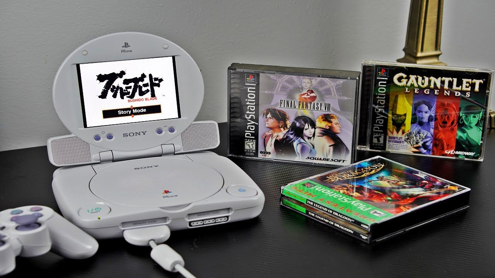
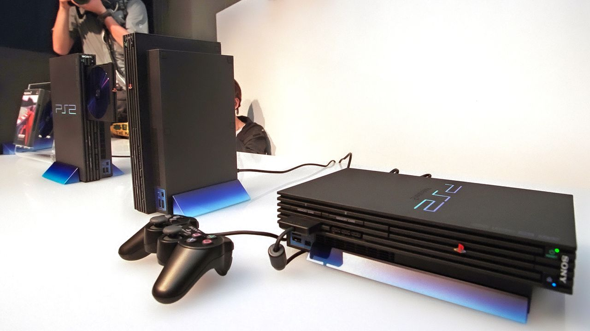
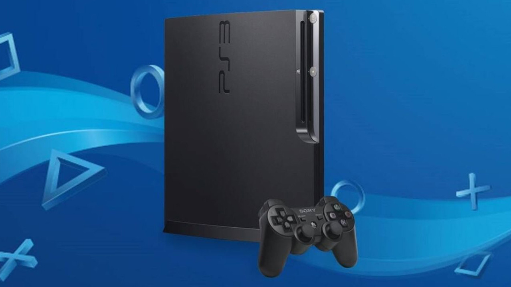
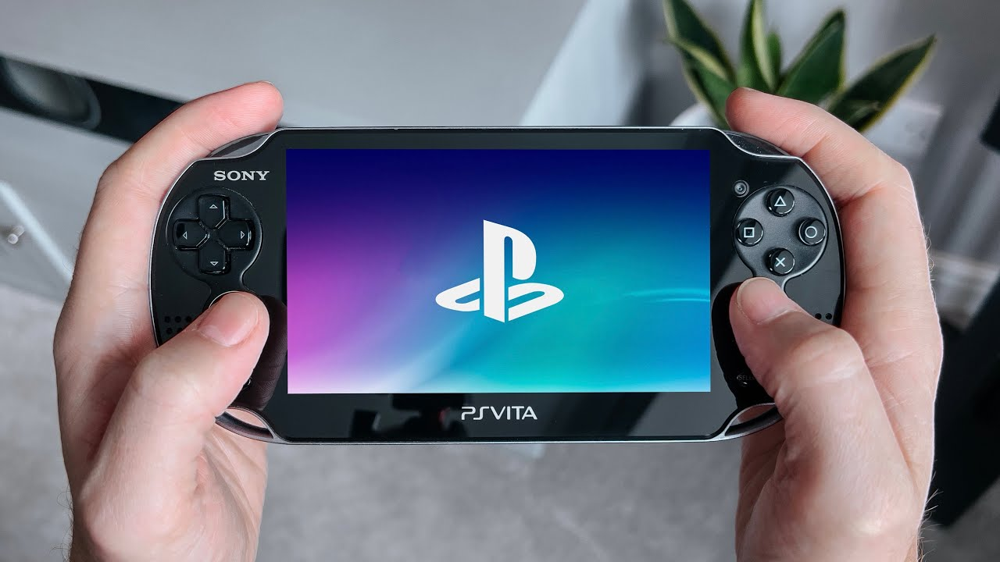
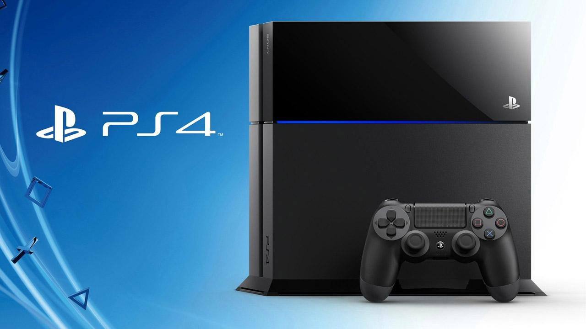

When Sony stepped into the console market in the mid-1990s it was more than a new competitor — it was the start of a cultural shift.
From CD-based storytelling on the PS1 to the cinematic ambitions of the PS2,
the networked ecosystem of the PS3, the portable experiments of the PSP and
PS Vita, and the immersive features of the PS5, PlayStation has constantly
reshaped how games are made, marketed, and experienced.
This page presents a generation-by-generation look: a memorable quote for each era plus a focused paragraph explaining why that era matters —
the tech it introduced, the games that defined it, and the cultural ripple effects that followed.
Check Out This Video To See The History Of Playstation
💿PlayStation One (1994)
Launched in December 1994 (Japan) and 1995 globally, the original PS1 changed expectations for what a home console could deliver.
By adopting CD-ROMs instead of cartridges, it enabled developers to create longer, more cinematic experiences with full-motion video and richer audio.
The result was a wave of titles that showcased narrative ambition and technical leaps — Final Fantasy VII introduced many players to deep, emotional RPG storytelling;
Metal Gear Solid rewrote the rules for cinematic stealth adventures; Gran Turismo pushed for realism in racing. Selling over 100 million units worldwide,
the PS1 helped transition gaming from a niche pastime into mainstream entertainment and set the foundation for modern AAA production values.
“The PlayStation is not a toy. It’s a revolution.” – early Sony marketing

📀PlayStation Two (2000)
Arriving in 2000, the PS2 became the most ubiquitous console of its era and remains the best-selling system in history.
Its built-in DVD playback made it attractive as an affordable home entertainment hub during a time when standalone DVD players were still pricey.
The PS2’s strengths extended to its enormous, genre-spanning library — from the sprawling open world of Grand Theft Auto: San Andreas to the artistic minimalism of Shadow of the Colossus.
Backwards compatibility with PS1 software and a massive third-party ecosystem made it a practical choice for consumers and a haven for developers, cementing Sony’s dominant market position for years.
“It only does everything.” – PlayStation 2 marketing slogan

🕹️PlayStation Portable (2004)
The PSP, launched in 2004, signaled Sony’s intention to bring near-console experiences into pockets and backpacks.
With a widescreen display and multimedia features (including UMD movies), the PSP blurred the line between game device and personal media player.
Games such as Crisis Core: Final Fantasy VII and Monster Hunter Freedom Unite demonstrated that deep, involved gameplay could succeed in a portable context.
While it never toppled Nintendo’s handheld dominance, the PSP proved there was strong demand for sophisticated portable hardware and opened the door to richer mobile gaming experiences.
“Dude, get your own PSP!” – Sony ad campaign
🌐PlayStation Three (2006)
The PS3 started with major challenges: a high launch price, complex hardware architecture that initially frustrated developers,
and mixed messaging. Despite this, PS3 ultimately became the console that mainstreamed Blu-ray playback and laid the groundwork for a modern digital ecosystem via PlayStation Network.
Over its lifecycle the console hosted transformative games — Uncharted elevated cinematic action-adventure, The Last of Us combined storytelling and gameplay in new ways,
and Demon’s Souls helped birth a genre-defining approach to difficulty and design. In hindsight, PS3 is a story of recovery: from a rocky debut to a deeply influential platform.
“Riiiiidge Racer!” – Kaz Hirai, E3 2006 presentation (memorable E3 moment during PS3 launch era)

🎮PlayStation Vita (2011)
The PS Vita arrived as a powerful, premium handheld with dual analog sticks, a high-fidelity screen, and impressive graphics for its size.
Critically praised titles — Persona 4 Golden and Gravity Rush among them — demonstrated the hardware’s capability for rich, portable experiences.
However, its commercial performance was limited by a shift toward smartphone gaming and inconsistent third-party support. Still, the Vita cultivated a dedicated community,
fostered innovative indie and niche releases, and remains celebrated by enthusiasts for its uncompromised portable design and game library.
“The PS Vita is the ultimate portable gaming experience.” – Sony marketing

🌟PlayStation Four (2013)
With the PS4, Sony executed a clear, player-focused strategy: accessible hardware, strong developer relations, and robust social features.
The generation produced a string of acclaimed exclusives that broadened the medium’s artistic range — Bloodborne’s uncompromising design, Horizon Zero Dawn’s open-world storytelling,
and God of War’s reinvention of a storied franchise. The PS4 also normalized streaming, sharing, and community-driven content, turning gameplay moments into social currency.
The console’s commercial and cultural success restored Sony’s leadership in the industry and influenced design and business strategies across the market.
“For the players.” – PlayStation 4 slogan

⚡PlayStation Five (2020)
Launched in late 2020, the PS5 emphasized speed, immersion, and tactile feedback. Its ultra-fast solid-state drive redefined load times and enabled new design patterns;
the DualSense controller’s adaptive triggers and haptics introduced nuanced sensory storytelling methods; and the console pushed graphical fidelity with ray tracing and high frame-rate support.
Early standout titles such as Demon’s Souls (Remake), Ratchet & Clank: Rift Apart, and God of War Ragnarök showcased the platform’s capacity for technical spectacle and emotional depth.
Despite supply constraints around launch, the PS5 quickly became central to the ninth-generation conversation and signaled how hardware and controller innovations can expand the language of gameplay.
“Play Has No Limits.” – PlayStation 5 slogan
Why PlayStation Matters
Across hardware cycles, PlayStation consistently paired technological ambition with an appetite for creative risks. Each generation brought tools that changed development practices,
introduced new audiences to gaming, and influenced how stories are told in interactive media. Whether through format shifts (CD, DVD, Blu-ray, SSD), portable experiments, or controller innovation,
PlayStation has been a major architect of modern gaming culture.
“The PS5 introduces new ways to feel games through DualSense.” – PlayStation marketing